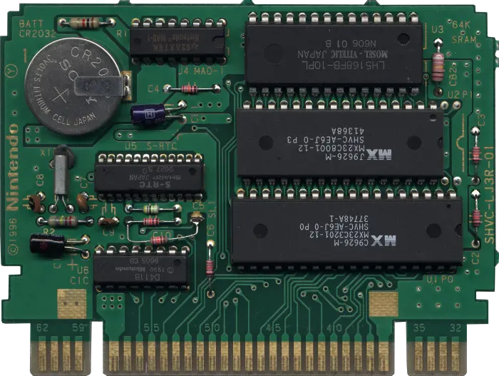

One of the remarkable characteristics of the Super Nintendo was the ability for game cartridges (cart) to pack more than instructions and assets into ROM chips. If we open and look at the PCBs, we can find inside things like the CIC copy protection chip, SRAM, and even "enhancement processors".
The copy-protection mechanism of the SNES is something I already dig into in my 10NES article. It works by having two chips talking in lockstep. One chip is in the console, the other in the cart. If the console CIC sees something it does not like, it resets every processor.
Not every SNES cart has a CIC. Unsanctioned games such as "Super 3D Noah's Ark" don't have one. To play the game, one needs to first insert the game in the console and then plug an official cartridge on top. The CIC bus lines are forwarded from Noah's towards the official game's CIC!

I was unable to find a list of all SNES games with their ROM size. So I made my own. That is 3,378 titles (across USA/Japan/Europe) presented in the chart below.

Games ROM size used to be expressed in bits instead of bytes. Zelda III, for example, was not advertised as 1,048,576 bytes but the size of its ROM in bits, that is 1,048,576 * 8 / (1024*1024) = 8Mb. The largest game ever released was Star Ocean (48Mb or 6,291,456 bytes) while a masterpiece such as Super Mario World used a mere 524,288 bytes (4Mb) ROM.
If you don't want to click on the .csv, here are the most noteworthy games (feel free to scream me an email if your favorite game is not in the list).
| Game | Zone | Mb | Bytes |
|---|---|---|---|
| Star Ocean | Japan | 48 | 6,291,456 |
| Tales of Phantasia | Japan | 48 | 6,291,456 |
| Street Fighter Alpha 2 | USA | 32 | 4,194,304 |
| Street Fighter Zero 2 | USA | 32 | 4,194,304 |
| Chrono Trigger | USA | 32 | 4,194,304 |
| Super Street Fighter II | USA | 32 | 4,194,304 |
| Donkey Kong Country | USA | 32 | 4,194,304 |
| Super Metroid | USA | 24 | 1,571,143 |
| Secret of Mana | USA | 16 | 2,097,152 |
| Street Fighter II | USA | 16 | 2,097,152 |
| Super Mario World 2 - Yoshi's Island | USA | 16 | 2,097,152 |
| Mega Man X2 | USA | 12 | 1,572,864 |
| Aladdin | USA | 8 | 1,048,576 |
| Teenage Mutant Ninja Turtles IV | USA | 8 | 1,048,576 |
| Contra III - The Alien Wars | USA | 8 | 1,048,576 |
| Legend of Zelda, The - A Link to the Past | USA | 8 | 1,048,576 |
| Star Fox | USA | 8 | 1,048,576 |
| Super Mario Kart | USA | 4 | 524,288 |
| Super Mario World | USA | 4 | 524,288 |
| F-Zero | USA | 4 | 524,288 |
Some titles offered the ability to save progress. This was done by having a SRAM chip powered by a battery. The SRAM went into low-power mode when the console was turned off to reduce the drain.
 Source (snescentral.com). Zelda III PCB
Source (snescentral.com). Zelda III PCB
In this Zelda III PCB above, we find the CIC (D413A) mentioned previously in U4. In U1, 0x80000 = 524,288 bytes of ROM. In U2, a LH5268AF-10TLL, 64 Kbits (8 KiB) of SRAM. In U3 the MAD-1 chip is a Memory Address Decoder which arbitrates access to the ROM/RAM[1][2].
The most famous enhancement processor is the Super FX (a.k.a "MARIO", a.k.a "GSU-1") which was used for Starfox in 1993. But EC chips were used prior to this date.
A complete list of Enhanced SNES games is available on wikipedia and snescentral.com. In total, 13 ECs powered 72 games.
The "Super Accelerator 1" is the MVP of the Enhancement Chips. Included in 34 carts[3], it is a 65C816 CPU (the same as the one in the SNES) but running 4x faster at 10.74 MHz. It also features 2KiB of SRAM and an integrated CIC[4].
Source (snescentral.com). Super Mario RPG PCBAbove, a Mario RPG PCB. Notice the absence of CIC chip (since the SA-1 has one), a ROM chip in U1 containing the game instructions and assets, a SRAM chip in U2 (with an integrated decoder which void the needs for a MAD-1), and the SA-1 in U3.
Notice there is no oscillator since the SA-1 uses the System Master clock line from the cart port and halves it internally. The result is a 21.4772700 MHz / 2 = 10.74 MHz frequency.
How does it work?
We can find the full description in the SNES Developer Documentation Volume II[5]. Upon startup, the SA-1 is in "stop" state. The SNES CPU creates a Reset Vector and resumes the SA-1. The initial SA-1 Instruction Pointer is retrieved from that dedicated Reset Vector.
The SA-1 has three modes of operations named Accelerator, Parallel Processing, and Mixed Processing. In the most powerful configuration, it makes the overall system five times more capable.
The SA-1 CPU and the Super NES CPU operate simultaneously, which results in five times greater performance of the Super Accelerator System (SAS) over the current Super NES.
- Super Nintendo Developer Manual Book II[6]
Thanks to the improved processing, the SNES is able to animate and detect collisions on all 128 sprites available in the PPU. The horsepower also allowed to transform sprites on the fly (rotate/scale them) and write them back into the PPU VRAM. The dramatic improvements were demonstrated in a Nintendo SA-1 demo cart[7].
SA-1 enthusiasts further demonstrated the performance difference. The video below compares execution of sort algorithms using a LoRom (the cheapest cart to manufacture), a HiRom (a cart with faster ROM resulting in fewer wait-state inserted when the CPU accesses the bus), and a SA-1.
The SA-1 has also been used by the retro-gaming community to improve the game-play of past games suffering slowdown. Amazing projects such as Eliminating slowdown in Super Mario World, Gradius III slowdown removal (took three months of work[8]) and Contra III slowdown removal[9] are works of beauty. Even Super Mario World[10] got the treatment (I can't remember slowdowns but I was only twelve back then).
Super R-Type (SNES) - Original x SA-1 Comparison.
Contra III (SNES) - Original x SA-1 Comparison.
Gradius III - SNES Original x SA-1 Comparison[11].
Gradius III (SNES) - Original x SA-1 Comparison.
The process of converting a title to SA-1 seems fairly involved, requiring in particular to remap RAM/ROM accesses. This is puzzling since the documentation of the SA-1 states that "The SNES and the SA-1 uses the same memory mapping"[12]. If you know why, please shot me an email.
Efforts to automatize the remapping and sa1-ize more SNES games were underway as recently as 2019 via the SA-1 Collection Project[13].
The CX4 is Capcom's baby powering both Mega Man X2 and Mega Man X3. It is capable of 3-D wire-frame rendering and numerous math operations along with scaling and rotating sprites into the VRAM[14]. You can find examples in MMX2 intro or in MMX2 boss fights.
Most associate it with wire-frame effects but it most definitely is not used for just that. It provides sprite functions, wire-frame effects, Propulsion, Vector. triangle, trigonometric functions and result tables and coordinate transform functions.Source (snescentral.com). Mega Man X2 PCB
In MMX2 and MMX3, it handles all sprites, so it's literally used throughout the entire game. This basically allows for more sprites on-screen than the SNES would otherwise allow without flicker. I think this is how some of the large bosses like the intro bosses are done.
- Source[15]
Above, the Mega Man X2 PCB. Notice the copy protection CIC in U4, 8M (8 Mbis = 1MiB) ROM containing game instructions and assets in U1, more ROM in U2, and the CX4 in U3.
Notice the 20Mhz oscillator in X1 since the CX4 does not use the console Master Clock.
The DD1 is a sprite decompression chip, able to feed picture processing unit VRAM directly (and a little bit more[16]). It was used in two games, Star Ocean and Street Fighter Alpha 2.
The DD1 was rumored to be responsible for Street Fighter Alpha 2 blank before a round started. The reason was detailed by Modern Vintage Gamer[17]. It turned out the problem was transferring sound samples to the DSP RAM.
Source (snescentral.com). Street Fighter Alpha 2 PCBThe simplest PCB we will look at today, Street Fighter Alpha 2 ships with a lot of ROM in U1 (4 MiB) and the DD1 to decompress assets on the fly. Notice how there is no CIC so it is integrated into the DD1.
The series of DSP chips supports nineteen titles. The DSP-1 accounts for sixteen of them, in particular classics like Super Mario Kart and Pilotwings[18]
The name is poorly chosen since DSP stands for Digital Signal Processor but they do not operate on a continuous signal like most DSPs.
The chip is extensively documented in the Super Nintendo Developer Manual Book II[19]. In these pages, we learn that it works in blocking mode (the CPU does nothing while the DSP operates).
The Super NES CPU waits while DSP1 processes data, before sending the next data.
- Developer Manual[20]
The DSP offers instructions such as fast 16-bit multiplication, inverse, sin/cos projection, vector size, rotation and so on which were obviously paramount to program the HDMA and update the 3D view in Mode 7[21].
Source (snescentral.com). Super Mario Kart PCBAbove, a packed Mario Kart PCB which leverages every component we learned about so far. There is an external CIC in U5, a ROM in U1, SRAM to save games in U3, and finally a MAD-1 address decoder for ROM/RAM addressing in U4. Of course to allow savegame to survive console power off, we find a battery in the upper left.
Like the CX4, the DSP does not use the Master Clock from the cart line. Instead it requires an oscillator (found here in X1). The resulting frequency is 8 MHz.
DSP-1 powered game Pilot Wings was "improved" when enthusiasts found out the game used texture at much higher resolution than Mode 7 could display. bsnes was modified to give Mode 7 an HD resolution for the result below.
There were three versions of the DSP-1 named DSP-1, DSP-1a, and DSP-1b. While introducing bug fixing and improving the process, the chip behavior was slightly altered which resulted in planes in Pilot Wings demo crashing into the ground (as unveiled by Foone[22]).
Used in a single game (Dungeon Master) to convert the Atari ST routines. It seems that it was mostly to help scaling sprites as seen here.
Used in a single game (SD Gundam GX).
Used in two games (Top Gear 3000 and The Planet's Champ TG 3000).
The OBC-1 was used in a single game Metal Combat: Falcon's by Revenge Intelligent Systems. It was rumored to be used to manipulate sprites. However this is debated on nesdev.org.
It's essentially a very, very simplistic save RAM mapper. It helps build OAM (sprite) tables in RAM (without the need for bit manipulation), that are then DMA'ed into OAM memory.Source (snescentral.com). Metal Combat: Falcon's Revenge PCB
Honestly, it seems like a serious waste of an engineering effort. It should be a weekend project for an experienced programmer to remove the need for the chip entirely. [...]
I think the biggest justification for it was the anti-piracy benefits.
- Near[23]
In Metal Combat's PCB we find the OBC1 in U4. There is a CIC in U6, an address decoder MAD-1 in U5, the game assets ROM are in U1 and U2, the 8KiB SRAM to save games is in U3, and finally the battery to power the SRAM is in the upper left.
S-RTC is a chip to keep track of real-clock time used in a single title, Daikaijuu Monogatari II. It is unclear why Hudson Soft developers needed to keep track of real-time. Perhaps to display it to players?
 Source (snescentral.com). Daikaijuu Monogatari II PCBCIC in U6, S-RTC in U5, MAD-1 in U4, Lots of ROM in U1 and U2, 8 KiB SRAM for savegames in U3, and the battery to power it in the upper left.
A data decompression chip by Epson, used in three games: Tengai Makyou Zero, Momotaro Dentetsu Happy, and Super Power League 4 which also has real-time clock capability.
Source (snescentral.com). Tengai Makyou Zero PCBA novelty above is the R1513 in U5 which protects the SRAM from voltage spikes when the power is turned on and off. The SRAM is actually in U3 (8KiB), the CIC (F411B) is in U7, two huge ROM are in U1 and U2. Finally, the SPC7110 is in u4.
The ST series of chips from SETA Corporation were reportedly aimed at improving game AI. The ST-010 was used in a single game (Exhaust Heat 2 - F1 Driver he no Kiseki)[24]
 Source (snescentral.com). "Exhaust Heat 2" PCB
Source (snescentral.com). "Exhaust Heat 2" PCB
The CIC (D411A) is in U4. We find the ROM in U1, the ST010 is in U2, notice the X1 22Mhz oscillator to clock it. Finally, a novelty is the 74LS139 in U4 which is like a MAD-1 address decoder.
Also used in a single game, Hayazashi Nidan: Morita Shougi[25]
Used only in Hayazashi Nidan Morita Shougi 2. It seems to be an ARM CPU with internal ROM containing its instructions[26].
The GSU-1 was used in five games (Star Fox, Stunt Race FX, Vortex, Dirt Racer, and Dirt Trax FX. Of all the Enhancement chips, it is the most documented with wikis, tutorials[27] and the Super Nintendo Developer Manual Book II[28].
Clocked at 10.74 MHz (master clock 21.47 MHz, halved internally), it is able to run without starving the SNES CPU thanks to an internal 512 byte instruction cache[29]. After it is done working on its task, it can interrupt the console's CPU (C-CPU).
While the SNES PPU1/PPU2 are tilemap/sprite oriented, the Super-GFX excels at rendering pixels and rasterizing polygons. It usually renders into a framebuffer located on the cart. The content of the framebuffer is transferred to the VRAM during VSYNC[30].
Source (snescentral.com). Star Fox PCBIn the PCB above, we see the GSU-1 (the M.A.R.I.O, Mathematical, Argonaut, Rotation, Input/Output) chip in U3, a CIC in U5, 74LS139 (the equivalent of a MAD-1) in U4, the game code and assets in the U1 ROM. The odity is that we find SRAM in U2 ....but no battery to power it when the console is turned off. That is because the (256/8 = 32 KiB) SRAM is "partially dedicated for SuperFX framebuffer storage"[31].
Like the SA-1, the SNES community is investing time in the GSU-1 via projects such as the Project Super FX[32] to improve past titles as much as possible.
The GSU-2 is a GSU-1 running at full speed, a.k.a 21.47 MHz. It was used in three games Super Mario World 2: Yoshi's Island, DOOM, and Winter Gold.
The power gain from not having its clock halved is demonstrated by (once again) enthusiasts who swapped the GSU-1 for a GSU-2 on a Star Fox cart.
The author of DOOM for SNES, Randy Linden, did not have access to any documentation about the GSU chip or even DOOM source code. He reverse engineered all of it[33]. Randy did a superb job since this is the only console port able to use the PC levels (other consoles had to simplify the geometry).
Source (snescentral.com). Super Mario World 2: Yoshi's Island PCBSuper Mario World 2 uses the GSU-2 mostly for sprite scaling and stretching (sprites are manipulated and written back into the PPU VRAM[34]). See for example, Yohshi's Island rolling boulder sequence.
This PCB has a battery so the SRAM is used for both hosting the framebuffer and save game state. Oddly, we find an X1 oscillator which should not have been necessary since the GSU-2 could have used the Master Clock. Could it be a voltage issues[35]
Of course the SNES community has tinkered with GSU-2 titles. DOOM, the most polygons heavy title, was overclocked to 32Mhz which increased the framerate from 10-11 to 14-15 fps[36].
If EC greatly improved the player experience and reduced the cost for publishers, they would become a thorn in the side of emulator authors in later years. Some games, relying on peculiar ECs, were only properly emulated in 2012[37]!
In the early days, games such as SF2 Alpha were "emulated" by requiring pre-decompressed sprites "graphic packs" since the internals of the DD1 were unknown.
Great effort went into reverse engineering. Some of the chips had hard-coded functions requiring de-capping. Some (like the ARM based ones) had internal ROM storing their instructions. These require emulators to be provided a BIOS file[38]).
Even as of 2020, the emulation of some of the most obscure chips has still not been completed[39].